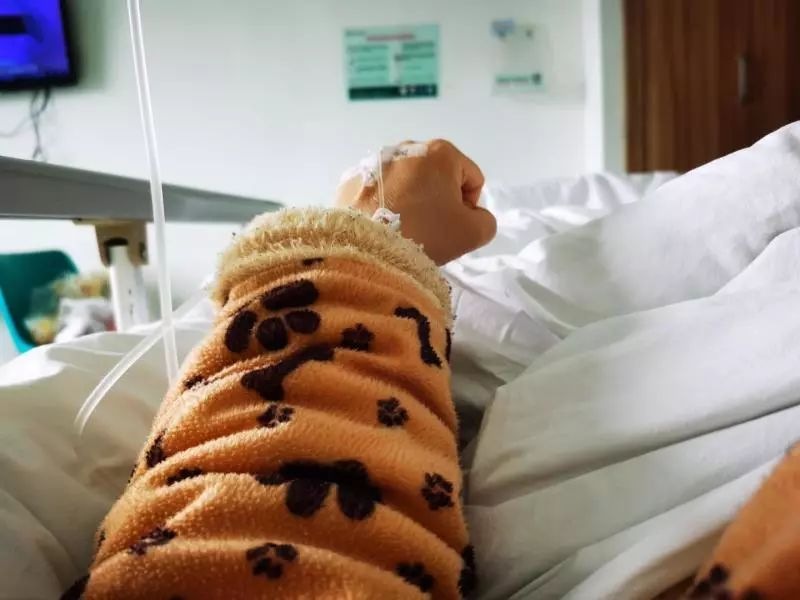

“妈妈出院，我爸去世的消息瞒不住了”
原文链接 备份链接 武汉市青山区市民 夏女士 澎湃新闻记者 薛莎莎 整理 夏女士家住武汉市青山区，家中七口人：公婆、父母、丈夫、她和三岁大的孩子。此前，澎湃新闻曾报道了她一家七口疑似感染新冠肺炎的故事。 她公婆、丈夫先后查出肺部感染或病 …
武汉市青山区市民 夏女士
澎湃新闻记者 薛莎莎 整理
夏女士家住武汉市青山区，家中七口人：公婆、父母、丈夫、她和三岁大的孩子。此前，澎湃新闻（www.thepaper.cn）曾报道了她一家七口疑似感染新冠肺炎的故事。
她公婆、丈夫先后查出肺部感染或病变，住进了武汉市第九医院的隔离病房。她父母肺部也感染，此前在武汉市中心医院治疗。随后，公婆、丈夫和母亲所做的新冠病毒核酸检测，均呈阳性。2月4日上午，夏女士的父亲“突发重症”抢救无效离世，她和家人未能见到父亲最后一面。
2月14日，夏女士称，她公公身体基础不好，但仍然战胜了病毒，当日已经出院回家。她三岁孩子的核酸检测也转阴了，若再测一次还是阴性，也可以出院。
夏女士公公出院。 夏女士提供(00:11)

夏女士在输液治疗。 夏女士供图
夏女士表示，她想快点好起来，以此激励其他病人。如果康复出院，她和老公都想为其他病人捐血浆。
澎湃新闻将持续以日记的形式，记录夏女士一家在治疗期间所经历的种种。
以下是夏女士的日记：
2月14日 星期五 晴
今天是我入院的第十一天，身体各项指征都还算平稳。
早上医生查房说，过两天我再去复查一次，到时候看身体恢复得如何。护士每天都会来查氧饱和度、心率、体温，一天来查三四次。我的其他指数都正常，就是心率有点快，后背偶尔有点疼，早起的时喉咙有点不舒服。
今天的早餐，朋友送来了她亲手做的饼，还送了车厘子。我吃了一顿丰盛的早餐，感觉元气满满。
治疗以来，我认为好好吃饭真的挺重要。饿的时候，我的精神很差，吃饱后立马感觉有力气了。听医生说这病是消耗性疾病，所以营养比较重要。
今天，儿童医院那边说我家宝宝核酸阴性了，如果再检测一次也是阴性，宝宝就可以出院了，我又看到了曙光啦！加油，我也要快点好起来接宝宝回家。
我希望我快点好起来，给其他病人增加斗志。等我好了，我想捐血浆，我老公也想捐。
今天最大的好消息是，我公公核酸检测双阴，已经出院回家啦！
2020年2月14日
本期编辑 常琛
推荐阅读


原文链接 备份链接 武汉市青山区市民 夏女士 澎湃新闻记者 薛莎莎 整理 夏女士家住武汉市青山区，家中七口人：公婆、父母、丈夫、她和三岁大的孩子。此前，澎湃新闻曾报道了她一家七口疑似感染新冠肺炎的故事。 她公婆、丈夫先后查出肺部感染或病 …
原文链接 备份链接 武汉市青山区市民 夏女士 澎湃新闻记者 薛莎莎 整理 夏女士家住武汉市青山区，家中七口人：公婆、父母、丈夫、她和三岁大的孩子。此前，澎湃新闻曾报道了她一家七口疑似感染新冠肺炎的故事。 她公婆、丈夫先后查出肺部感染或病 …
原文链接 备份链接 武汉市各区正在加紧把所有发热人员集中隔离，并进行全部发热人员的检测，目的是让疫情全部暴露出来，之后疫情防控也将从“攻坚战”转至“歼灭战” 图/法新 文 |《财经》特派武汉记者 言清 王小 编辑 | 王小 “今天的会非 …
原文链接 备份链接 实习生 赵雨萌 澎湃新闻记者 薛莎莎 “如果孕妈妈不幸感染，要保持好心态，吃好睡好，要相信宝宝一定会没事，也要相信自己会康复。”2月12日下午，澎湃新闻联系到许佳（化名）时，她如是说道。 许佳的检测报告显示双肺感染。受 …
原文链接 备份链接 澎湃新闻记者 宋江云 2月12日晚，九江学院附属医院官方微信公号消息，2月11日，九江学院附属医院新确诊一例特殊的新型冠状病毒肺炎病例。该病例无发热症状，隐匿性强，在确诊前曾三次核酸检测均呈阴性，第四次核酸阳性方最终确 …